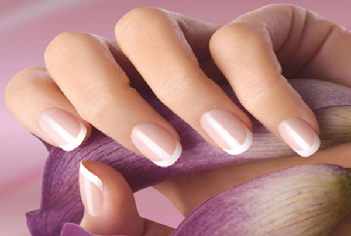
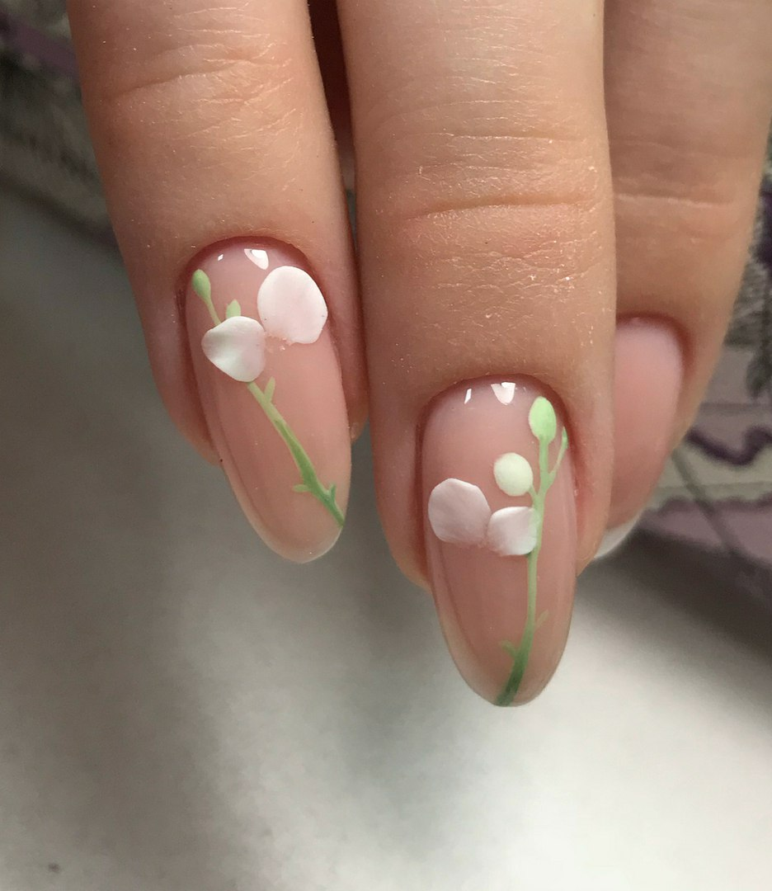
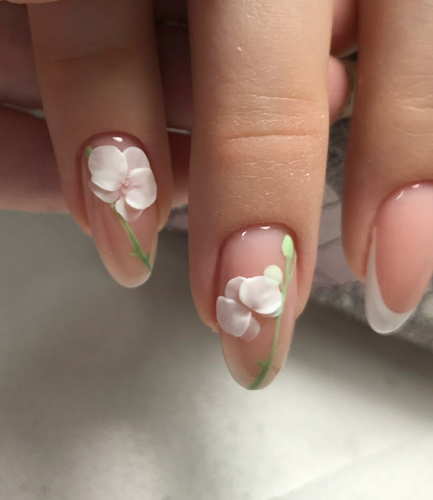
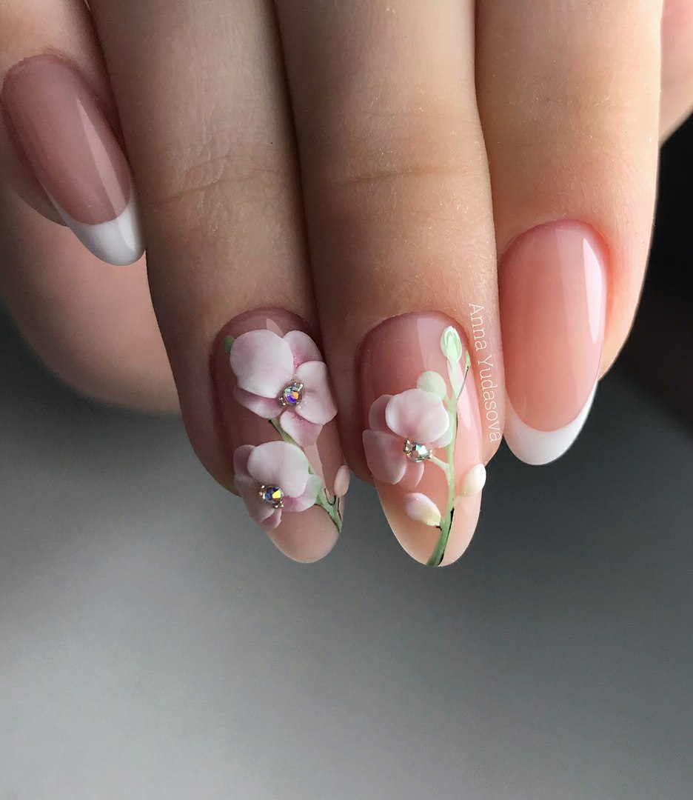
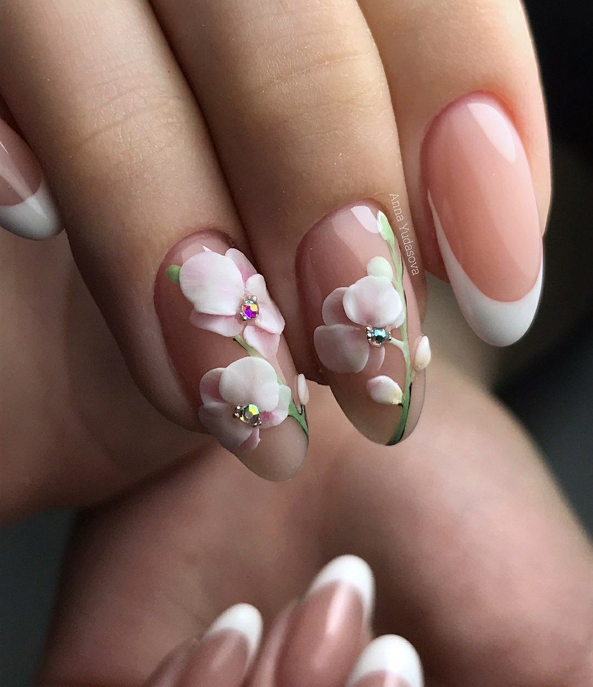

Не всякая женщина может ходить в косметический салон и делать маникюр, это удовольствие требует и времени и материальных затрат. Но даже самый хороший маникюр не скроет неухоженные и слабые ногти. Нужен ежедневный уход, чтобы ногти выглядели аккуратными и здоровыми.
Чтобы ухаживать за ногтями, делайте питательные маски. Возьмите питательный крем для рук с витаминами Е, А, D и вотрите его в кончики пальцев. Ежедневно применяйте в течение 3 недель. Рекомендуется втирать питательный крем перед сном в ногтевое ложе, таким образом, он будет улучшать кровообращение и смягчать кожу вокруг ногтя.
Необходимо делать маникюр не меньше 1 раза в 2 недели. Если у вас нет возможности ходить регулярно в косметический салон, то купите себе качественный маникюрный набор. Все инструменты следует содержать в чистоте. После каждой процедуры протирайте их спиртом или одеколоном. Если у вас ломкие ногти, то не нужно их обрабатывать металлической пилочкой, будет лучше, если вы замените её на стеклянную, либо на пластиковую.
Слабые ногти можно укреплять смородиновым, лимонным или клюквенным соком, либо можете взять раствор столового уксуса.
С особой осторожностью нужно подходить к выбору лака для ногтей, лак не должен содержать ацетон, так как он делает ноготь шершавым, ломким и высушивает его. Ногти, которые являются проблемными, красить нужно один раз в 10 дней.
Ванночка для ногтей.
Возьмите 1 столовую ложку морской соли и растворите её в стакане тёплой воды, продолжительность процедуры - 20 минут. Ванночку необходимо принимать 1 раз в два дня, в течение 2,5 недель.Ванночку на основе оливкового масла, которое разогревается на водяной бане, принимают около 15 минут. Курс более продолжительный 1 раз в неделю на протяжении 1,5 месяцев.
Уход за ногтями и укрепление их.
Вот вам несколькополезных советов для сохранения красоты своих ноготоков.
1. Красивые ногти прекрасно дополняют ухоженные руки, ухаживать за руками нужно постоянно. Здоровый ноготь по цвету розовый, эластичный и прочный. Для здоровья ногтей должно быть полноценное питание, которое должно содержать минералы и необходимые витамины.
2. Витамин А нужен для укрепления ногтей и их роста, содержится в моркови, в печени, помидорах, масле и в зелени.
3. Рекомендуется делать маникюр 1 раз в 2 недели.
4. Пользуйтесь качественной косметикой, не содержащей ацетона.
5. На ночь смазывайте питательным кремом.
6. Идеальным считается такой вариант, когда на ночь снимается лак с ногтей или через каждые 5 дней давать ногтям 2 дня отдохнуть.
7. Полезно втирать в ногти лимонный сок, столовый уксус, сок красной и чёрной смородины и сок клюквы.
8. Принимайте 1 месяц продукты, которые содержат желатин, это заливное желе. Они способствуют крепости ногтей и их росту, через месяц можно повторить курс.
9. Чтобы укрепить слоящиеся ногти полезно делать солевые ванночки. Для ванночки можно использовать океаническую или морскую соль без красителей и ароматических добавок. Растворите в тёплой воде 1 чайную ложку соли и подержите в ней руки около 20 минут. Проводится данная процедура 10-15 дней подряд, затем можно повторить через месяц. В качестве профилактики достаточно делать 1 раз в неделю.Вот небольшое видео, которое поможет вам в уходе:
Предлагаю вашему вниманию такой вариант маникюра с пошаговой инструкцией. Для начала необходимо обработать ваши ноготки: подпилить, смягчить кожу, выбрать форму и т.д. Мы предлагаем вам овальную форму ногтей. После обработки можно приступать к покраске:
 🌷сначала рисуем зеленую веточку и сразу же прорисовываем бутоны цветом светлее, сушим.
🌷Покрываем топом без лс
 🌷 начинаем первоначальные этапы, катая маленькие шарики пластилина(чтобы они были прозрачнее)
🌷каждый лепесток просушиваем отдельно, можно лепить одновременно на двух пальцах
 🌷в конце прорисовываю гель-краской веточку и сами цветы совсем слегка и клею стразы на топ для страз lianail academy
 🌷 Ваш маникюр готов! Наслаждайтесь красотой ваших ручек. Конечно, не стоит забывать об уходе за вашей кожей и вашими волосами, об этом Вы можете прочитать здесь и здесь
{kind=link}
{kind=link}
{kind=link}
{kind=link}